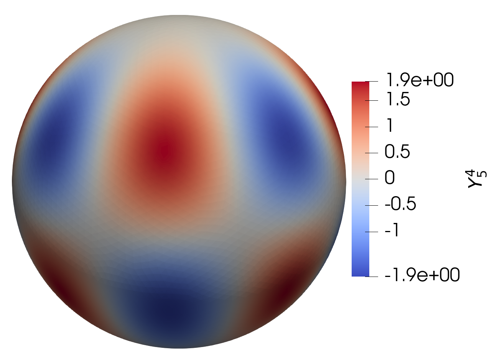

Surface Area Computation Benchmark for Sphere
Area of the Sphere with Pull-back Gauss Quadrature on Simplex
This benchmark focuses on the computational task of computing surface areas for the standard sphere \(S^2\). We utilize the distmesh library to generate Delaunay triangulations with \(N_{\Delta}=1652\) triangles for the sphere. surfgeopy offers two options for computing surface integrals:
Pull-back Gauss Quadrature on Simplex (Default Option) with quadrature degree \(14\).
import surfgeopy as sp
sp.integration(phi, dphi, mesh_path, intp_degree, lp_degree, refinement, integrand)
If the user would like to keep the default quadrature scheme but change the quadrature degree, use:
import surfgeopy as sp
sp.integration(phi, dphi, mesh_path, intp_degree, lp_degree, refinement, integrand, deg_integration)
Gauss-Legendre Rule
If the user prefers to keep the default Gauss-Legendre scheme with a specific quadrature degree, use:
import surfgeopy as sp
sp.integration(phi, dphi, mesh_path, intp_degree, lp_degree, refinement, integrand, deg_integration, 'Gauss_Legendre')
Imports
import matplotlib.pyplot as plt
import numpy as np
from math import pi
from time import time
# Local imports
import surfgeopy as sp
mesh_path = "../meshes/SphereMesh_N=1652_r=1.mat"
def phi(x: np.ndarray):
return x[0]**2 + x[1]**2 + x[2]**2 - 1
def dphi(x: np.ndarray):
return np.array([2*x[0], 2*x[1], 2*x[2]])
Error Evaluation Function
def err_t(intp_degree, lp_degree, mesh_path, refinement):
f1 = lambda _: 1
t0 = time()
areas = sp.integration(phi, dphi, mesh_path, intp_degree, lp_degree, refinement, f1)
t1 = time()
sum_area = sum(areas)
t1 = time()
exact_area = 4 * pi
print("Relative error: ", abs(sum_area - exact_area) / exact_area)
print("The main function takes:", {(t1 - t0)})
error = abs(sum_area - exact_area) / exact_area
return error
Polynomial degree
Nrange = list(range(2, 15))
lp_degree = float("inf")
refinement = 0
error1 = []
for n in Nrange:
if n % 1 == 0:
print(n)
erro1 = err_t(int(n), lp_degree, mesh_path, refinement)
error1.append(erro1)
Result Visualization
plt.semilogy(Nrange, error1, '-or')
plt.xlabel("Polynomial degree", fontsize=13)
plt.ylabel("Relative error", fontsize=13)
plt.xticks(np.arange(min(Nrange), max(Nrange) + 1, 1.0))
plt.ylim([2.758195177427762e-18, 3.9514540203871754e-04])
plt.grid()
{kind=link}
Spherical Harmonics
In this benchmark, we compute a nonconstant integrand. We integrate the \(4^{\text{th}}\)-order spherical harmonic:
Visualized below:
{kind=link}
over the unit sphere \(S^2 \subset \mathbb{R}^3\) with a mesh resolution \(N_{\Delta}=496\). This integral is zero because the spherical harmonics form an \(L_2\)-orthogonal family of functions, and hence
Imports
import matplotlib.pyplot as plt
import numpy as np
from math import pi
from time import time
# Local imports
import surfgeopy as sp
mesh_path ="../meshes/SphereMesh_N=124_r=1.mat"
def phi(x: np.ndarray):
return x[0]**2+x[1]**2+x[2]**2-1
def dphi(x: np.ndarray):
return np.array([2*x[0],2*x[1],2*x[2]])
# The integrand
def fun(x: np.ndarray):
return (3*np.sqrt(385)*(x[0]**4-6*x[1]**2*x[0]**2+x[1]**4)*x[2])/(16*np.sqrt(np.pi)) # Y_5,4
Error Evaluation Function
def err_t(intp_degree, lp_degree, mesh_path, refinement,integ_degree):
t0 = time()
areas = sp.integration(phi, dphi, mesh_path, intp_degree, lp_degree, refinement, fun,integ_degree)
t1 = time()
sum_area = sum(areas)
t1 = time()
exact_int = 0
print("Absolute error: ", abs(sum_area - exact_int))
print("The main function takes:", {(t1-t0)})
error = abs(sum_area - exact_int)
return error
Polynomial degree
Nrange = list(range(2, 18))
lp_degree = float("inf")
refinement = 1
#By default, the integration degree is set to 14.
integ_degree=25
error1 = []
for n in Nrange:
if n % 1 == 0:
print(n)
erro1 = err_t(int(n), lp_degree, mesh_path, refinement,integ_degree)
error1.append(erro1)
Result Visualization
plt.semilogy(Nrange, error1, '-or')
plt.xlabel("Polynomial degree", fontsize=13)
plt.ylabel("Absolute error", fontsize=13)
plt.xticks(np.arange(min(Nrange), max(Nrange) + 1, 1.0))
plt.ylim([1.0e-18, 1.0e-02])
plt.grid()
{kind=link}